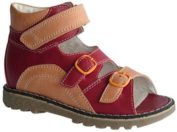

Welcome to ortopediniai batai
Ortopediniai batai vaikams
2020.10.30 04:32Kainos ir patarimai Basutės Sezoninė avalynė Žieminė avalynė BOA avalynė Apie mus Kontaktai Skambinti +370 658 29898 info@ortopediniaibatukai.lt MENIU Kainos ir patarimai Basutės Sezoninė avalynė Žieminė avalynė BOA avalynė Apie mus Kontaktai
INDIVIDUALIĄ AVALYNĘ 100% KOMPENSUOJA VALSTYBINĖS LIGONIŲ KASOS
Vaikiška profilaktinė-ortopedinė avalynė turinti CE atestaciją, kurią su gydytojo siuntimu,100% kompensuoja Valstybinės ligonių kasos Tai I klasės medicininis gaminys skirtas šleivapėdystės, plokščiapėdystės ir netaisyklingos eisenos profilaktikai ir gydymui.
KAINOS IR PATARIMAI
BASUTĖS
SEZONINĖ AVALYNĖ
ŽIEMINĖ AVALYNĖ
BOA
AVALYNĖ
KONTAKTAI Tweet
Lankytojai iš šio puslapio taip pat lankėsi
Rekvizitai
UAB "Šaltlita",
Gaižiūnų g. 70 Kaunas 50111 Lietuva
Įmonės kodas 234922670
PVM mokėt. k. LT349226716
A/s LT294010042503166437
Luminor / DNB
